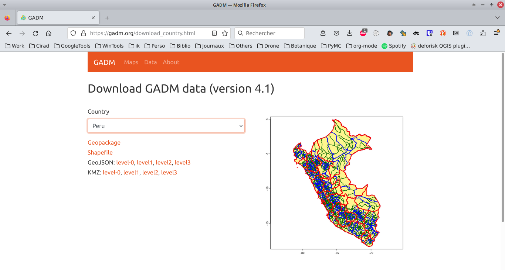
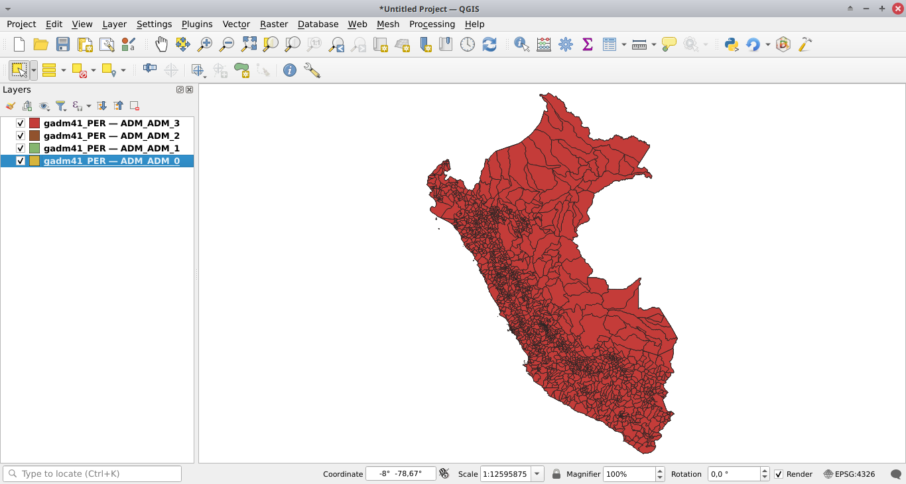
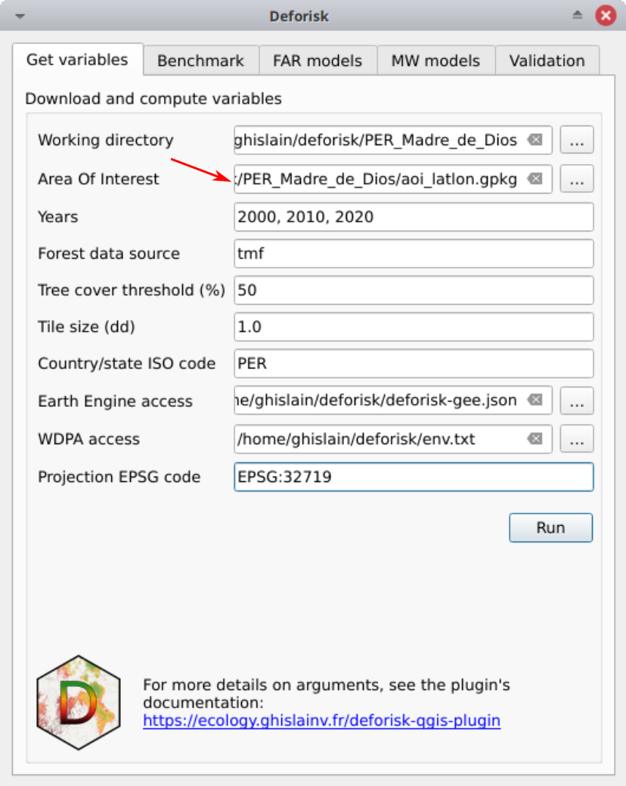

Juridictions infranationales#
Objectif#
Le but est d'obtenir un fichier GPKG nommé aoi_latlon.gpkg avec deux couches nommées aoi pour la juridiction et subj pour les sous-juridictions. Ce fichier peut ensuite être utilisé avec le plugin deforisk pour définir la zone d'intérêt (AOI).
Création du fichier à l’aide des outils QGIS#
Téléchargez les données de GADM sous forme d’un fichier GPKG.
{kind=link}
Ajoutez toutes les couches du fichier GPKG à QGIS.
{kind=link}
Sélectionnez la juridiction avec la barre d’outils de sélection (si elle n’est pas visible, activez-la dans Vue > Barres d'outils > Sélection).

Pour enregistrer l’entité dans un nouveau fichier GPKG nommé aoi_latlon.gpkg, cliquez avec le bouton droit sur la couche et sélectionnez Exporter > Enregistrer l'entité sélectionnée sous. Cochez Enregistrer uniquement les entités sélectionnées et nommez la couche aoi (il est obligatoire d’utiliser ce nom de couche).
{kind=link}
Sélectionnez les sous-juridictions (pour enregistrer plusieurs entités avec l’outil de sélection, maintenez le bouton Ctrl enfoncé).
{kind=link}
Enregistrez les entités dans le même fichier GPKG que précédemment (aoi_latlon.gpkg) et nommez la couche subj (il est également obligatoire d’utiliser ce nom de couche).

Nous venons de créer un fichier GPKG nommé « aoi_latlon.gpkg » avec deux couches nommées « aoi » pour la juridiction et « subj » pour les sous-juridictions. Notez que vous pouvez sélectionner des juridictions et des sous-juridictions à différents niveaux administratifs, en sélectionnant des entités au niveau 1, 2 ou 3 dans l’ensemble de données GADM.
Affichage des données dans QGIS.#
Ouvrez l’explorateur de fichier. S’il n’est pas visible, activez-le dans
Vue > Panneaux > Explorateur.Recherchez le fichier
aoi_latlon.gpkgdans vos dossiers.Faites glisser et déposez le fichier GPKG pour ajouter les couches
aoietsubjdans la liste des couches QGIS.
{kind=link}
Utilisation avec le plugin deforisk#
Sélectionnez le fichier GPKG lors de la définition de la zone d’intérêt (AOI).
{kind=link}